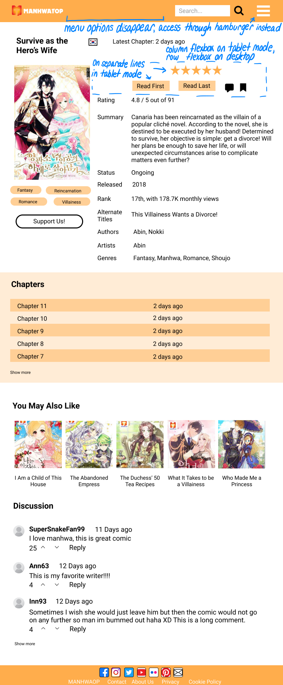

My friends and I are avid readers of manhwa, or Korean comics. One website we use often is MANHWATOP, so I decided to try to improve and redesign their manhwa page.
Specifically, I am using the manhwa page of "Survive as the Hero's Wife," although all manhwa pages on the site are formatted the same.
To determine how to improve the website, I first had to identify problems to fix.
I identified usability, learnability, memorability and efficiency problems based on my analysis and previous complaints from friends. Here is a summary of some problems :
I assessed accessibility with the help of WebAIM WAVE and VoiceOver.
A large portion of the website is light grey text on light grey or white background, causing a lot of contrast errors. WAVE detected 155 contrast errors. WAVE also found 7 elements that were missing alternative text describing them, making it difficult for users using screen readers to determine their functions. When testing the website with VoiceOver on Safari, I struggled with the navigation bar because there are dropdown options under “MANGA LIST” and “BLOG,” but this was not announced to me so I have no way of knowing they exist and cannot navigate to them without moving my mouse cursor to them.
I first redesigned the page visually by making a set of low-fidelity wireframes for desktop, tablet, and mobile using Basalmiq.
Desktop
Tablet
Mobile
I chose to include a flag to show if the story is a manga, manhua, or manhwa instead of writing it out, because the words are very similar and a flag is more clear.
I then thought about colors, font, and text and created a set of high-fidelity prototypes using Figma.
Desktop
Tablet
Mobile
Hamburger Menu can be opened on narrow screen like tablet or mobile.

I created the following style guide to show the colors and visual interactions of the website
I chose to use orange, white, and grey as the color scheme of the website because I wanted the website to look light and warm. I thought it was important for a manhwa reading website to look warm and welcoming to encourage a good mood for reading, and also be simple and straightforward to help users easily consume the content or access information.
Finally, I created a responsive webpage following the hi-fi prototypes and style guide.
I thoroughly tested the website on various screen sizes and made sure the layout was still effective on desktop, tablet, and phone. Additionally, I tested 150% font size on Google Chrome and on my Mac settings. I found that large font size caused my full header menu to wrap text strangely, so I adjusted the width at which the website enters tablet mode and shows a hamburger menu instead to fix this. WAVE evaluation did not differ between screen sizes, I had some empty buttons and links on all screen sizes.
I learned from this assignment how difficult compelete accessibility is to achieve. Even after many hours of studying the problems the original site had and redesigning it to fix them, I still ended up forgetting some button and link descriptive text. It is seemingly a simple, straightforward step to add alternative text to visual elements, but when there are so many it becomes easy to slip up and forget. I feel that part of this is due to a lack of education on accessibility. In my many years studying computer science, I have never been formally taught how to correctly make buttons and links accessible. Accessibility is extremely imporant, yet is not focused on nearly as in depth as more standard topics like how to code a javascript button or css flexbox.
Images used on my site are from MANHWATOP, iconfinder, and fontawesome.